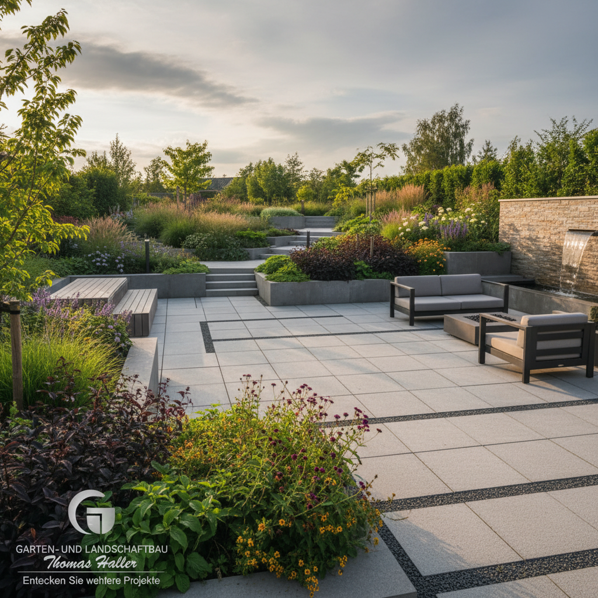
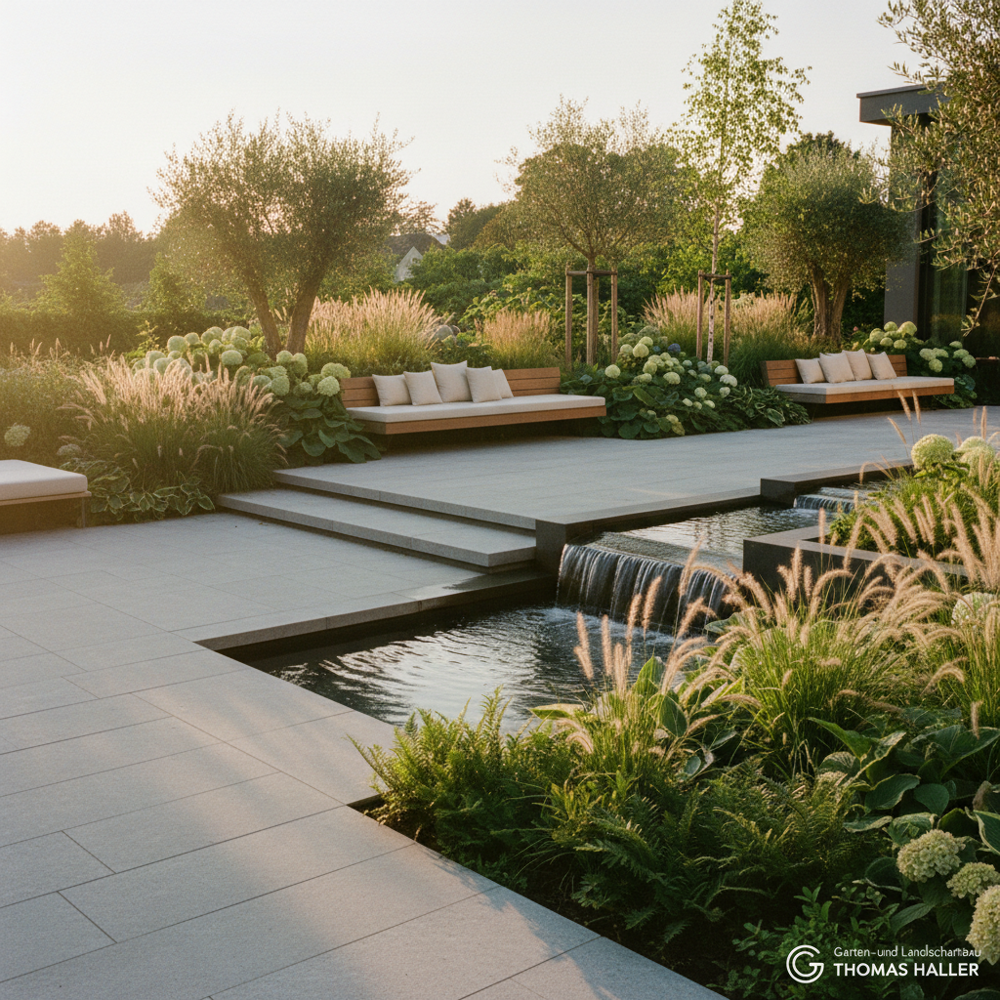
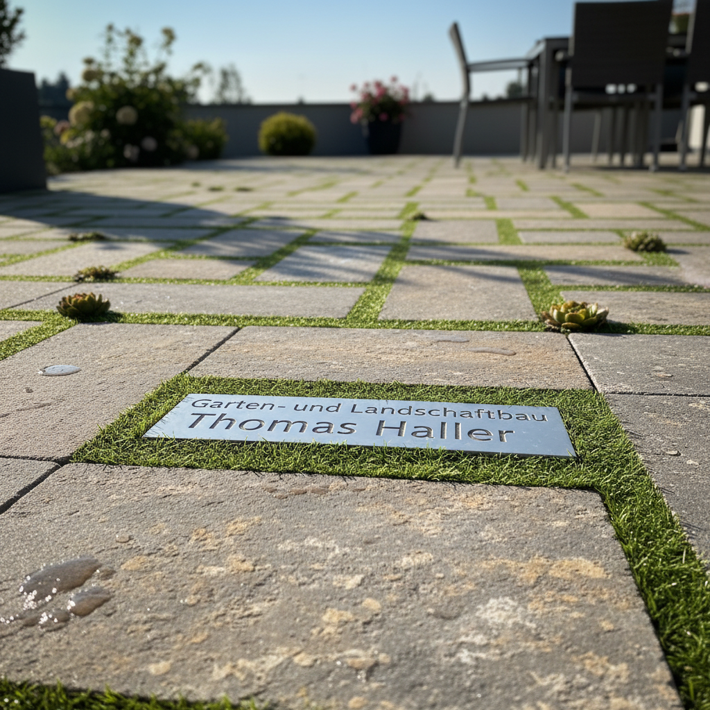
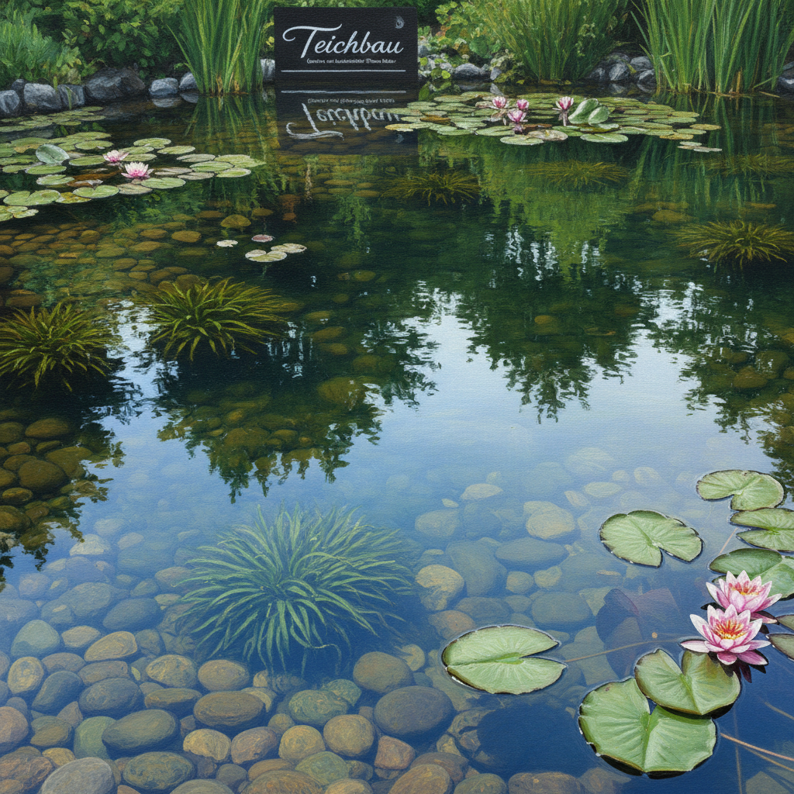
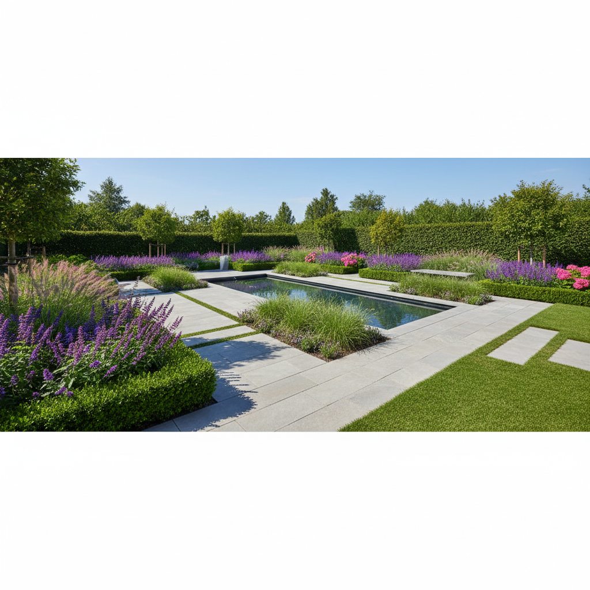
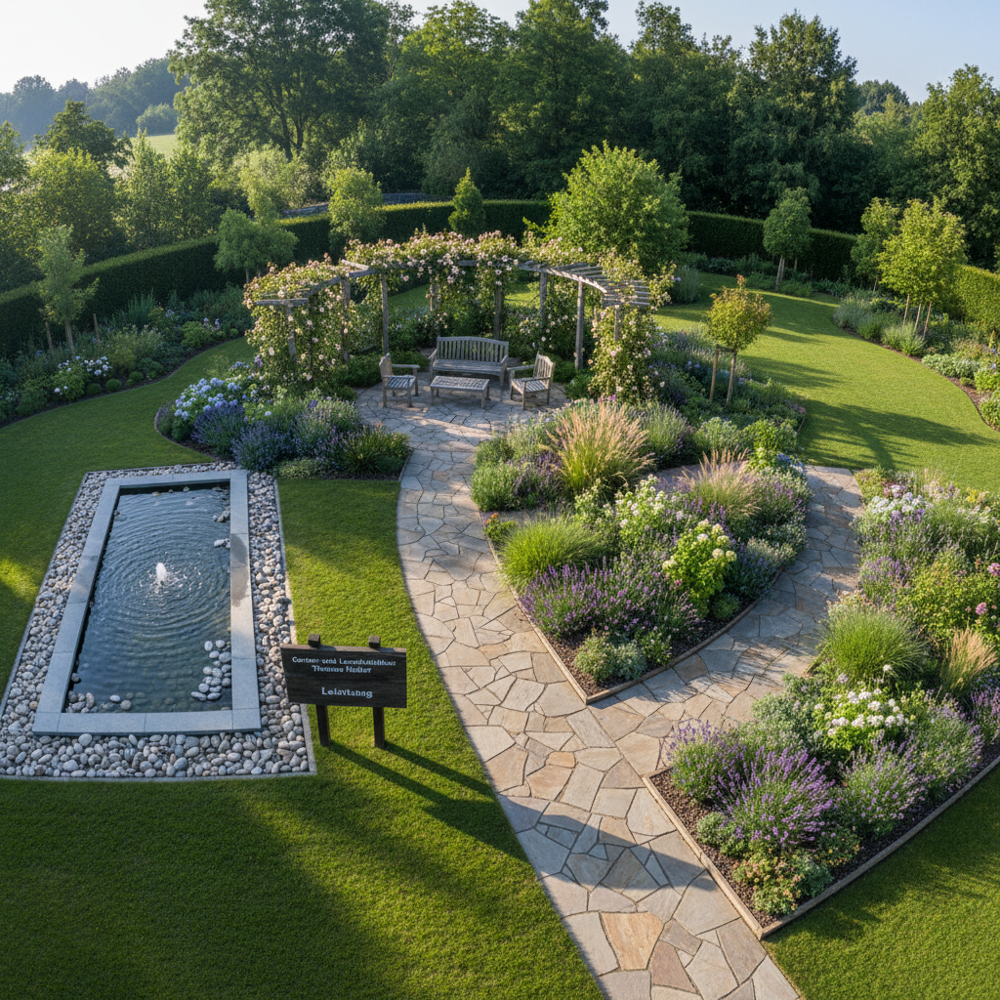
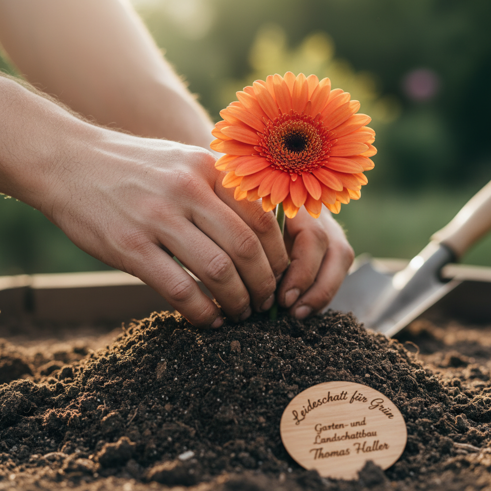
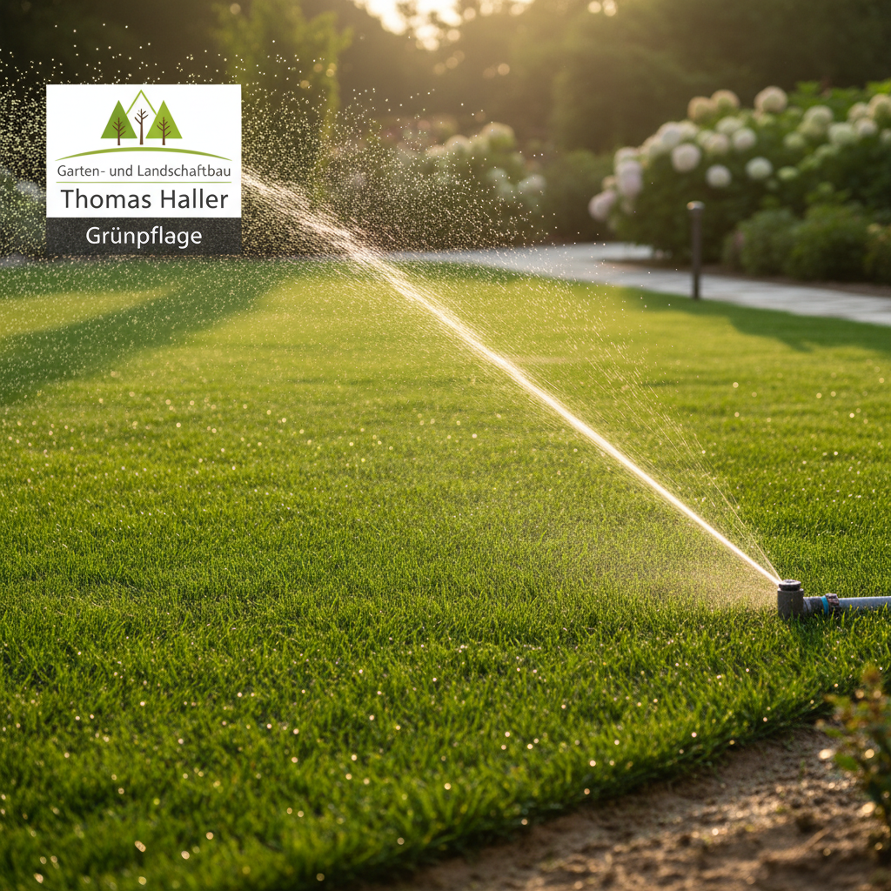
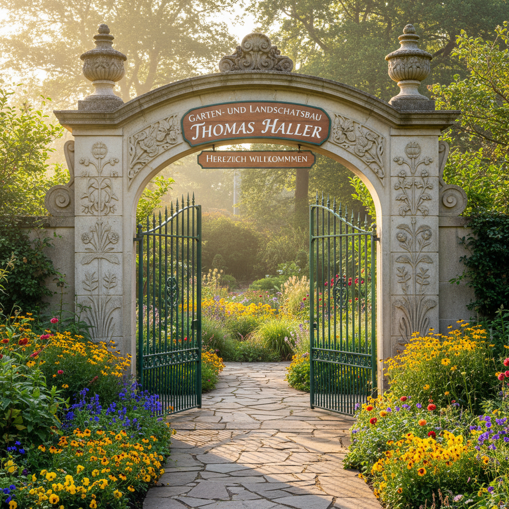

Bilder sagen mehr als tausend Worte
Unsere Referenzen
Lassen Sie sich von unseren realisierten Projekten inspirieren. Jedes Bild erzählt die Geschichte eines einzigartigen Gartens.
Vielfalt in Grün: Unsere realisierten Projekte
Jeder Garten ist ein Unikat. Tauchen Sie ein in unsere Referenzen und lassen Sie sich von der Vielfalt unserer Arbeiten inspirieren.







